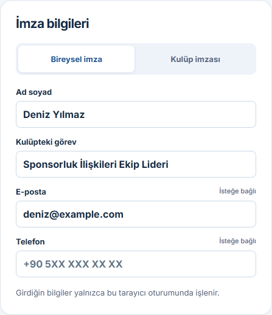

İmzanı e-postana ekle.
Stüdyoda imzanı hazırla, Gmail veya Outlook’a ekle ve kendine bir deneme e-postası gönder.
1. Stüdyoda imzanı hazırla
İmza türünü seç ve bilgilerini gir
Kendi adına yazıyorsan Bireysel imza seçip adını ve görevini gir. Kulüp adına yazıyorsan Kulüp imzası seç ve gerekirse birim adını ekle. Ek e-posta ve telefon alanlarını ihtiyacına göre doldur.

Önizlemeyi kontrol et ve kopyala
İmza dili menüsünden Türkçe veya English seç. Görev ya da birim adını seçtiğin dilde yaz. Önizlemeyi kontrol ettikten sonra İmzayı kopyala’ya bas.

Kopyalama çalışmazsa
HTML indir’e bas. Dosyayı tarayıcıda aç ve görüntülenen imzayı seçip kopyala. Ardından e-posta ayarındaki imza alanına normal yapıştırma komutuyla ekle.
2. Gmail · Web
AyarlarTüm ayarları görüntüleGenelİmza
- Bilgisayarda Gmail’i aç ve yukarıdaki ayar yolunu izle. Yeni oluştur’a tıklayıp imzana ad ver.
- İmza alanına Ctrl+V ya da ⌘V ile yapıştır.
- İmza varsayılanları bölümünde yeni e-postalar ve yanıtlar/iletmeler için tercihini seç. Sayfanın altından Değişiklikleri kaydet’e tıkla.
Outlook · Web ve yeni Outlook
AyarlarHesaplarİmzalar
- Yukarıdaki ayar yolunu izle. Birden fazla hesabın varsa imzayı kullanacağın hesabı seç.
- İmza ekle’ye tıkla, imzana ad ver ve kopyaladığın imzayı düzenleme alanına yapıştır.
- Yeni e-postalar ve yanıtlar/iletmeler için tercihini seç. Kaydet’e tıkla.
Klasik Outlook kullanıyorsan
Yeni bir ileti aç. İleti → İmza → İmzalar yoluyla imzanı oluştur. Yapıştırdıktan sonra varsayılanlarını ayarla ve Tamam’a tıkla.
3. Kendine deneme e-postası gönder
- Yeni bir e-posta aç ve imzanın otomatik olarak geldiğini kontrol et. Gerekirse yeni ileti için imza varsayılanını tekrar seç.
- Kendine gönder. Gelen e-postayı telefonda ve bilgisayarda açıp logoyu, iletişim bilgilerini ve bağlantıları kontrol et.